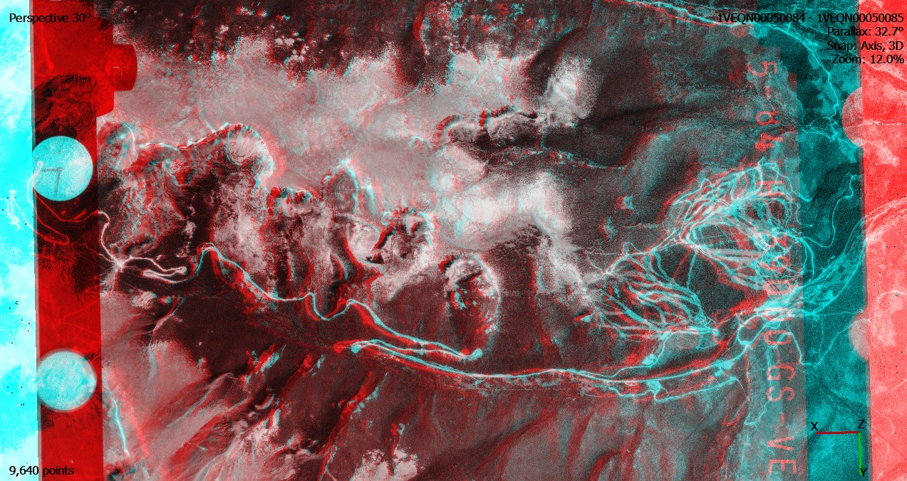

1. Aerial Photography and Stereoscopic Imaging#
In this lab we will use red and blue glasses to view aerial photography in 3D.
Downloading Imagery#
For 3D viewing, aerial imagery must be acquired systematically with sufficient (generally 2/3) overlap across images. The USGS Earth Explorer has historic aerial imagery over the U.S. Navigate to your area of interest and click points on the map to define a polygon. Under Search Criteria, click on Data Sets. In the next Data Sets menu, select Aerial Photo Single Frames, then click Results. Several options will be available for download.
Stereoscopy in Agisoft Metashape#
In Agisoft Metashape Professional, go to Workflow -> Add Photos. Once added, click Workflow -> Align Photos. In later labs, we will discuss the alignment parameters in more detail. For now, keep the default options.
Next, go to Tools -> Preferences. Under General -> Stereoscopic Display, select Anaglyph as the Mode, and click OK.
Switch to stereo mode under Model Menu -> View Mode -> Stereo Mode. Click the Show Images button on the Toolbar. Select two overlapping images in the Photos pane, right click and select Look Through. View the stereo pairs with red and blue glasses in the Model window.
{kind=link}
Additional instructions on stereoscopy in Agisoft Metashape is available here.
Stereo Mapping is also available in ArcGIS Pro.
Required Readings#
Verhoeven, Geert J. 2009. Providing an Archaeological Bird’s-eye View – an Overall Picture of Ground-based Means to Execute Low-altitude Aerial Photography (LAAP) in Archaeology. Archaeological Prospection 16:233-249. PDF
Additional Readings#
Campana, Douglas V. 1977. Making Stereo-Photomacrographs for Archaeological Studies. Journal of Field Archaeology 4(4):435-440. https://doi.org/10.2307/529399
Gajski, D., R. Župan, I. Racetin, R. Krstić. 2023. Straightforward Stereoscopic Techniques for Archaeometric Interpretation of Archeological Artifacts. Heritage 6:5066-5081. https://doi.org/10.3390/heritage6070268